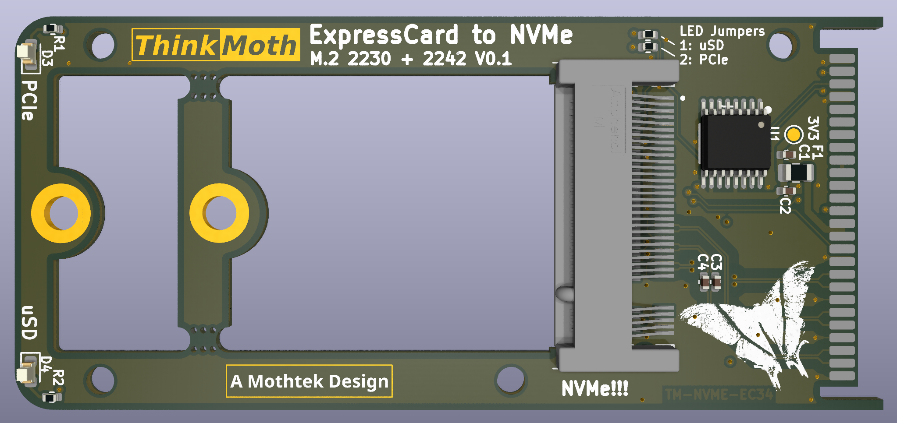
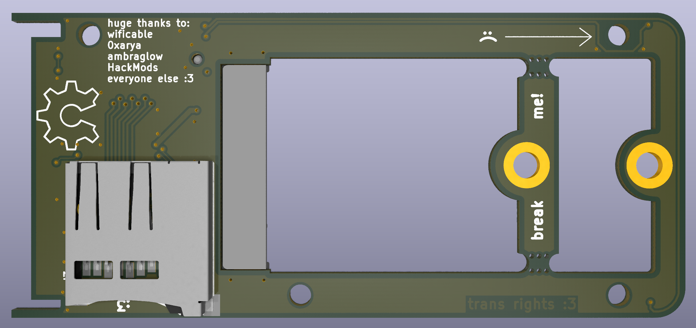
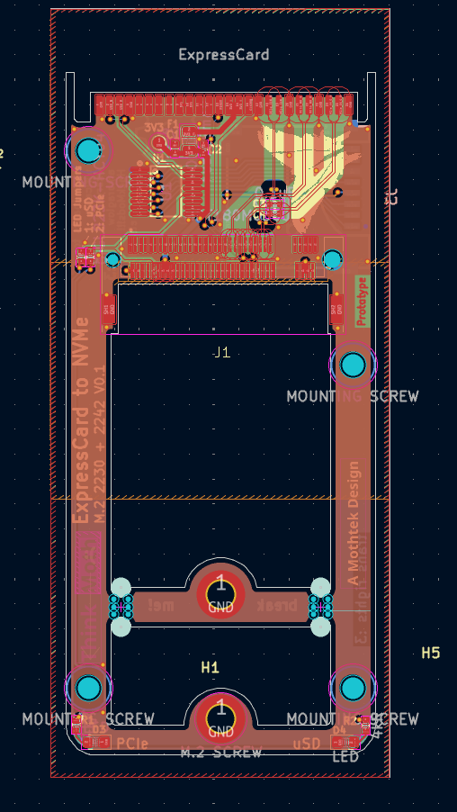

introducing the ThinkMoth ExpressCard to NVMe!
25/9/25 - moth
i've been working on the ThinkMoth for the last 6 months, and i want to finally show it off now that i'm getting close to having assembled hardware :) i'm intending to sell this board, but i also highly encourage DIYing it!
this board breaks out USB2.0 and 1x PCIe lane via ExpressCard, and has an M.2 NVMe socket as well as an SD card socket. you can use it to upgrade old ass machines, and the microSD card reader means you will always have a device to boot from. if you're using coreboot or similar, you can also just use the native NVMe driver. i'll do a writeup on setting up the adapters when the time comes!
designing this board has taught me so so much about high(er) speed design, and while i'm currently awaiting a prototype PCB run from JLCPCB before calling it a success, i'm so thankful to anyone reading this, and everyone who let me ask a billion questions on discord!
kicad pcb renders:   kicad pcb layout: 
specs!
- - m.2 2230/2242 NVMe with 1x PCIe lane
- - microSD card slot for a boot device
- - status LEDs to match your 20 year old business laptop
- - support for extra thick/double sided drives!
why make this?
because I wanted to :3 supporting older hardware with open source upgrades is a lot of fun!
also because of the tragic fate of ThinkMods, a similar project. shoutout to all the cool people i met because one guy accepted too many orders!
and thank you so much to Ambra and Hackmods for helping me get this project this far :)